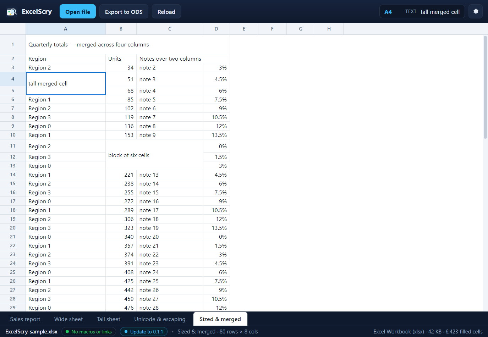

<!doctype html>
<meta charset="utf-8">
<title>ExcelScry — a sheet's own columns, rows and merges</title>
<style>
  body { margin: 0; background: #1b1d22; color: #c9cdd6;
         font: 14px/1.5 Segoe UI, system-ui, sans-serif; }
  figure { margin: 0; }
  img { display: block; width: 100%; height: auto; }
  figcaption { padding: 12px 16px; }
  code { color: #8fd3ff; }
</style>
<figure>
  
  <figcaption>
    The same grid, laid out by the sheet's own geometry. Column&nbsp;A is
    180&nbsp;px, <code>B</code> 70, <code>C</code> 150 and <code>D</code> 60,
    while <code>E</code>–<code>H</code> keep the workbook's 64&nbsp;px default;
    row&nbsp;1 is 44&nbsp;px tall and row&nbsp;4 is 32. Its title spans
    <code>A1:D1</code>, the note header spans <code>C2:D2</code>, and the two
    merged blocks — <code>A4:A5</code> and <code>B11:C13</code> — are drawn
    once, at the size of the whole region, so the covered cells leave no stray
    grid lines inside them. Selecting any cell of a region, by click or by
    arrow key, selects the region as one cell. (Shown in the UI harness, which
    serves this front end against a mocked workbook with these sizes.)
  </figcaption>
</figure>
